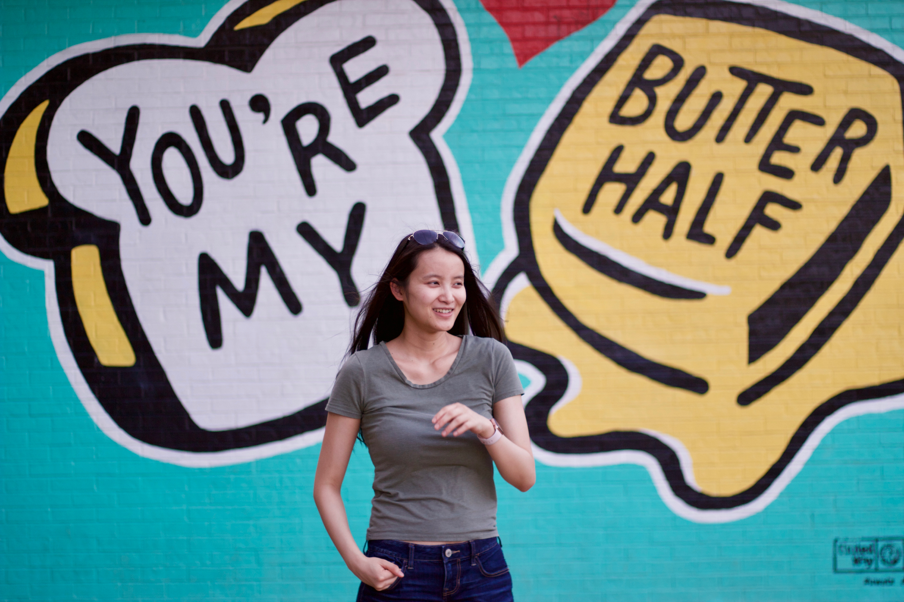

|
Violet Xiang
Hi! I am a PhD student at Stanford University advised by Nick Haber and Jay McClelland .
My interest is in building LLM-based social agents that can flexibly adjust their strategies as they encounter new agents with
previously unseen behaviors.
email ·
cv ·
scholar ·
github
|

|
|
Research
*Equal Contribution
|
|
Projects
|
[5]
From Centralized to Self-Supervised: Pursuing Realistic Multi-Agent Reinforcement Learning.
Violet Xiang , Logan Cross, Jan-Philipp Fränken, Nick Haber.
NeurIPS Workshop on Agent Learning in Open-Endedness 2023
[
code
]
|
[4]
The BabyView Camera: Designing a New Head-mounted Camera to Capture Children’s Early social and Visual Environments.
Bria Long, Sarah Goodin, George Kachergis, Virginia A Marchman, Samaher F Radwan, Robert Z Sparks, Violet Xiang , Chengxu Zhuang, Oliver Hsu, Brett Newman, Daniel LK Yamins, Michael C Frank.
Journal of Behavior Research Methods 2023
|
[3]
How Well Do Unsupervised Learning Algorithms Model Human Real-time and Life-long Learning?.
Chengxu Zhuang*,Violet Xiang*, Yoon Bai, Xiaoxuan Jia, Nicholas Turk-Browne, Kenneth Norman, James J. DiCarlo, Daniel L. K. Yamins.
NeurIPS Track on Datasets and Benchmarks
|
[2]
Defending against microphone-based attacks with personalized noise.
Yuchen Liu, Violet Xiang, EJ Seong, A Kapadia, DS Williamson.
Proceedings on Privacy Enhancing Technologies 2021 (2)
|
[1]
Learning the Generative Principles of a Symbol System from Limited Examples.
Lei Yuan, Violet Xiang, David Crandall, Linda Smith
Cognition 2020
|
|
{kind=link}